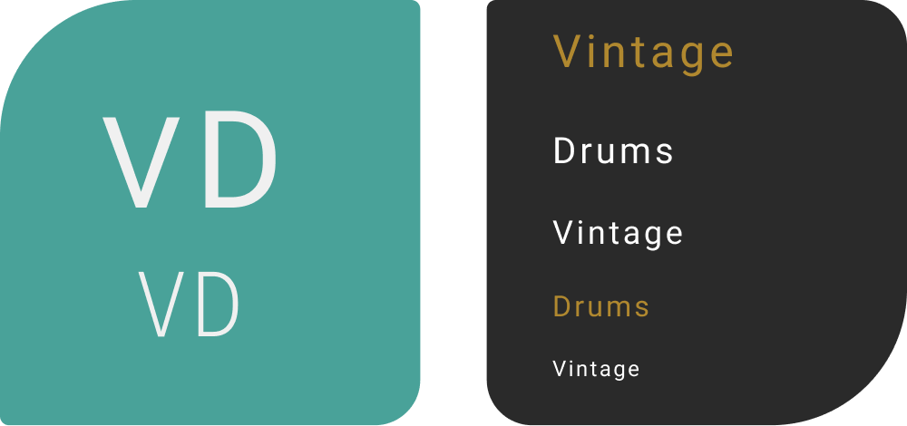

Vintage Drum Store
Visit Live Site →Overview
The Vintage Drum Store is a bespoke e-commerce platform tailored for collectors, professional musicians, and drum enthusiasts seeking high-quality vintage drums and cymbals. Unlike mainstream music gear marketplaces, which often prioritise volume over curation, this platform offers a premium shopping experience with carefully selected products, high-quality imagery, and detailed product information, including sound recordings.

Identifying User Pain Points & Market Gaps
Through competitor analysis and user research, several key issues were identified with existing websites selling vintage drums:
-
Lack of Curation & Overwhelming Product Listings
- - Many platforms (e.g., Reverb, eBay) present an extensive range of products with little organisation, making it difficult for users to find rare or high-end vintage drums.
- - Users struggle with filtering options and often have to sift through low-quality listings.
-
Poor Navigation & Cluttered Interfaces
- - Websites like eBay and some drum retailers have outdated or cluttered UI, making it difficult to browse efficiently.
- - Product discovery is hindered by inconsistent categorisation and confusing layouts.
-
Limited Product Information & Lack of Sound Previews
- - Buyers of vintage drums value sound quality and craftsmanship, yet many existing platforms only provide static images with generic descriptions.
- - The inability to hear a drum before purchasing increases uncertainty, leading to hesitation or abandoned purchases.
-
Complicated Checkout Process & Lack of Trust
- - Some marketplaces have long-winded checkout processes with unexpected fees or unclear shipping policies.
- - Users often worry about product authenticity and whether they are making a secure purchase.
-
Limited Personalisation & Engagement Features
- - Most platforms do not offer features that allow users to track favourite products, leave detailed reviews, or engage with other collectors.
- - Collectors often want to share insights and feedback, but existing sites lack the ability to interact beyond basic ratings.


UX/UI Design Approach – Addressing These Pain Points
Stage 1: Research & Strategy
-
- Competitor Analysis: Evaluated existing platforms (Drum Center of Portsmouth, Reverb, Vintage Drum Center, eBay) to identify navigation issues, design flaws, and best practices.
-
- User Research: Interviewed drummers, collectors, and music store owners to understand their frustrations and expectations when shopping for vintage drums online.
Stage 2: Information Architecture & Navigation Improvements
Solution: Simplified site navigation and product categorisation for intuitive browsing.
- - Clear product categories (Drum Kits, Cymbals, Stands, Accessories) with advanced filters for brand, price, and rating.
- - Minimalist menu structure to reduce cognitive load and improve the browsing experience.
- - Predictive search functionality allowing users to find products efficiently without excessive scrolling.
Stage 3: High-Fidelity Prototyping – Enhancing Visual Appeal & Engagement
Solution: Developed a modern, visually engaging interface that highlights premium drum collections.
- - Large, high-quality product images.
- - Interactive sound previews allowing users to hear drums before purchasing.
- - Colour scheme & typography selected to align with a vintage, premium aesthetic while maintaining readability.
Stage 4: Personalisation & User Engagement Features
Solution: Implemented features to enhance user retention and shopping experience.
- - User Accounts & Wishlists: Registered users can like and save products for future reference.
- - Reviews & Ratings System: Users can leave detailed feedback on products and engage with other musicians.
Stage 5: Optimised Checkout & Trust Signals
Solution: Streamlined the checkout process to build trust and encourage conversions.
- - Secure payments via Stripe with clear pricing breakdown.
- - Transparent shipping information including delivery estimates and premium options for drum installation.
- - Order tracking and confirmation emails to reassure users post-purchase.

Design Considerations
-
Colour Palette
- - Primary Background: White (#FFFFFF) & Off-White (#F8F9FA) for an open feel
- - Footer: Dark Charcoal (#2A2A2A) for contrast
- - Main Action Button: Teal-Green (#49A299) for attention
- - Hover Button: Copper-Gold (#B0882F) on footer
-
Typography
- - Primary Font: Roboto – for readability
- - Logo Font: Custom "Vintage Drums" font
Typography
Colour Palette

Outcome & Impact
This design approach significantly improved the user experience by addressing core frustrations collectors and musicians faced on existing platforms.
-
Enhanced Discoverability
- ✅ Users can easily find and filter high-quality vintage drums without sifting through irrelevant listings.
-
Seamless Browsing & Navigation
- ✅ A clean, structured layout reduces friction in the shopping experience.
-
Greater Engagement
- ✅ Interactive product pages, sound previews, and personalisation features keep users engaged.
-
Improved Trust & Conversion
- ✅ A transparent checkout process and order tracking boost customer confidence.
Thoughts
This project demonstrates how a well-executed UX/UI design can transform a niche e-commerce site into an engaging, user-centric platform. The result is a seamless shopping experience that elevates the vintage drum store's premium offering, helping it stand out in a competitive market.